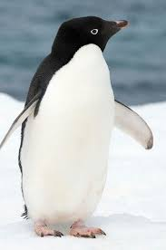

It is the most widespread penguin species, and, along with the emperor penguin, is the most southerly distributed of all penguins. It is named after Adélie Land, in turn named for Adèle Dumont d'Urville, who was married to French explorer Jules Dumont d'Urville, who first discovered this penguin in 1840.
Adélie penguins obtain their food by both predation and foraging, with a diet of mainly krill and fish.